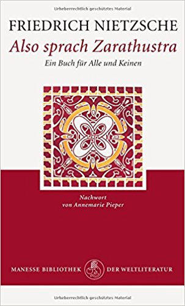

My favorite book is Thus Spoke Zarathustra, a philosophical novel written by German philosopher Friedrich Nietzsche published between 1883 and 1885. The book is Nietzscher's attempt to present his beliefs in a style similar to the New Testament with the charater Zarathustra. Zarathustra travels and makes speeches preaching against the traditional views of morality. Throughout his travels, Zarathustra encounters many people in different towns and cities who he interacts with by preaching to them, giving context to a speech recorded in the book, yet much of the book are speeches that do not contain any context. Nietzsche uses Zarathustra to advocate for the Übermensch, a new type of person who will, among other things, create new values outside fo tradtional views of morality and is motivated by a love of the Earth not a will to escape to heaven or an afterlife.
The main character is Zarathustra who is based on the Zoroastrian prophet of the same name. Zoroastrianism is an anciet Iranian religion that inspired many aspects of Judeo-Christian morality and theology which Nietzsche is opposed to. Thus Nietzsche uses his character to undo what he sees as the mistakes of the original Zarathustra.
I consider Thus Spoke Zarathustra to be my favorite book as it presents a way of living and viewing the world that is not only different, but in in many ways opposed to tradtion beliefs and teachings. Although I do not agree with everything that is said, I found it to be the most profound piece of literature I have come across.